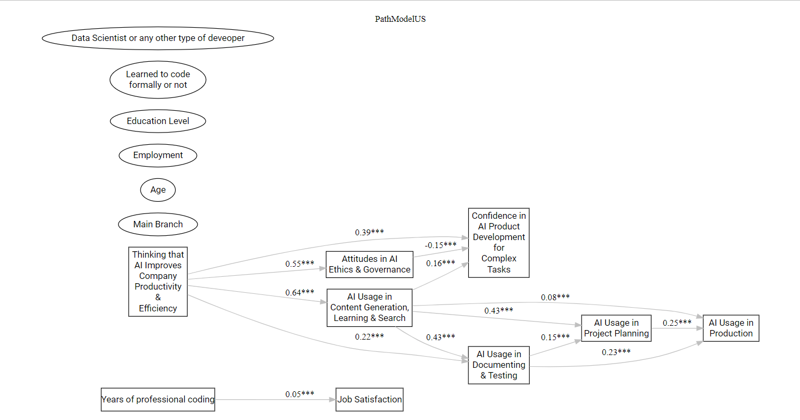

Part 2: Job Satisfaction with 2024 Stack Overflow Developer Survey
In the previous post, I argued that focusing on individual developers rather than companies is crucial because these professionals, with their diverse backgrounds and immediate influence on AI use cases and policies, directly shape how AI systems are developed and governed. Compared to the governments expected to regulate AI, these developers have a more immediate and practical impact on AI development. Yet, their attitudes and approaches remain largely underexplored.
Here, I focus on developers’ overall job satisfaction and how it is affected by AI usage, attitudes toward AI, and whether working in the United States or Europe impacts overall job satisfaction.
Being a developer in the United States vs. in Europe
The AI race has been ongoing for some time. Countries are becoming increasingly aware that leadership in this field could determine their future economic prosperity, geopolitical influence, and national security. A recent report from the UK’s Department for Science, Innovation, & Technology emphasizes prioritizing the training, retention, and attraction of a large and diverse pool of AI talent. The report states that the UK should focus on targeted recruitment to secure its future in the AI field. The UK is not alone; many other countries work on similar strategies.
The US and Europe have consistently attracted developers. However, these regions have distinctly different environments for AI development. Consider the following points.
Innovation vs. Stability: The AI culture in the US is more risk-taking and characterized by a “fail fast” mentality, while Europe tends to adopt a more cautious approach, emphasizing social responsibility and regulations.
AI-Specific Regulations: While the European approach involves extensive regulation and prioritizes fostering an environment focused on responsible AI, the US regulatory landscape continues to evolve, reflecting shifts from the Trump administration’s largely market-driven stance to the Biden administration’s more proactive emphasis on accountability, oversight, and consumer protection in AI technologies. Let’s see how the second Trump era will impact the AI landscape in the U.S. over the long term.
As a result, we can anticipate varying AI regulations regarding ethics, transparency, bias reduction, and data privacy in these areas. These regulations will influence developers’ daily responsibilities and adoption when creating AI systems, and developers can influence how these regulations are implemented in their workplaces.
This leads me to ask: do contextual differences affect developers’ overall job satisfaction due to the country’s AI culture?
The data:
Stack Overflow has been surveying its developer community on various topics for over a decade. The 2024 survey includes questions about AI usage and attitudes toward AI, factors contributing to developers’ coding satisfaction, and a self-report of overall job satisfaction. This is a practical starting point.
Although the study’s design is far from a randomized controlled trial, I used working in the US vs. Europe as an experimental treatment because the US and Europe represent naturally occurring distinct environments for AI development, with: - Contrasting cultural settings (risk-taking vs. cautious). - Different regulatory approaches (market-driven vs. comprehensive regulation).
I utilized various causal modeling techniques to determine if living in the US or Europe impacts developers’ overall job satisfaction. My methodological approach, involving double ML, causal segmentation model, and Bayesian networks, is deliberately inductive, allowing the different models to uncover distinct insights.
Before diving into the results, here is the table that outlines all the variables used in the models.
Features/variables used in the analyses
| Abbreviations | Long Form | Explanations |
|---|---|---|
| Outcome: JobSat | Job Satisfaction | How satisfied are you in your current professional developer role? |
| Treatment: TRT_USvEU | Residing in the U.S. vs. Europe | All developers who reside in EU countries + the UK are categorized as Europe |
| Socio-Demographics: | ||
| MainBranch | Option that best describes the developer |
learning to code; code primarily as a hobby; used to be a developer by profession but no longer is; not primarily a developer, but writes code sometimes as part of work/studies; developer by profession |
| Age | Age group | <18; 18-24; 25-34; 35-44; 45-54; 55-64; 65+; prefer not to say |
| Employment | Actively working or not |
Not actively working means: not employed, but looking for work; not employed, and not looking for work; student, full-time; student, part-time; retired. Actively working means: employed, full-time; employed, part-time; independent contractor, freelancer, or self-employed |
| EdLevel | Education Level | low: no university degree; high: bachelor’s and/or master’s degree; higher: professional degree |
| LearnCode | Learned to code formally or not | learned to code at university or not |
| YearsCode | Years of coding in total | including education |
| DataScientist | Data Scientist or not | works as a data scientist/ML specialist or any other developer role |
| Estimated Scores on AI Usage & Attitudes toward AI: | ||
| AI_impr_comp_prod_effc | AI Improves Productivity & Efficiency in Company | higher scores indicate that the developer believes the adoption of AI by the developer’s company has led to higher productivity and efficiency |
| AI_complex_confidence | Confidence in AI Tool Development for Complex Tasks | higher scores indicate a positive stance on AI adoption, trust in its accuracy, and confidence in AI handling complex tasks |
| AI_ethics_gov | Attitudes in AI Ethics & Governance | higher scores mean higher concerns about AI ethics & governance |
| AI_use_con_lea_sea | AI Usage in Content Generation, Learning & Search | higher scores indicate higher usage |
| AI_use_production | AI Usage in Production | |
| AI_use_doc_test | AI Usage in Documenting & Testing | |
| AI_use_proj_plan | AI Usage in Project Planning |
Findings
The overall differences in job satisfaction levels between U.S. and European developers are minor, and the causal machine learning algorithms with double ML1 provide mixed results: only the XGBoost algorithm indicates a significant effect. A causal segmentation model2: shows that the impact is most relevant for highly educated unemployed developers – this segment of developers in Europe report significantly lower levels of job satisfaction.
The causal forest algorithm reveals that the most important predictors are Confidence in AI Tool Development for Complex Tasks, Attitudes in AI Ethics & Government, and years of coding.
A basic explainable AI approach to the causal forest highlights the non-linear relationships. Looking at the partial dependence plots, four variables’ complex relationships to the outcome stand out: these variables are thinking that AI Improves Productivity & Efficiency in Company, the Confidence in AI Tool Development for Complex Tasks, Attitudes in AI Ethics & Government, and AI Usage in Content Generation, Learning & Search.
We also observe that the interaction strengths of these variables influence the reported job satisfaction of developers in the U.S. and Europe.
Note that explainable AI does not always mean interpretable AI. I turn to one of my favorite causal modeling approaches to make these findings interpretable.
Bayesian learning networks3
This approach has at least three key advantages: we are not restricted to a single outcome variable, we do not have to adhere to specific distributional assumptions, and the inductive approach can be flexible rather than strictly dictated by theory.
Since the U.S. and Europe represent naturally occurring distinct environments for AI development, and the preliminary models mentioned above hint at nonlinear, complex relationships, I adopted an inductive approach, split the data into European and U.S. samples, and let the model uncover the distinct paths in these environments.
US

Almost none of the demographics are related to the main variables in the U.S. sample. Only years of professional coding have a small positive effect on job satisfaction. What is striking is that this relationship is entirely independent of all other relationships in the U.S. context.
The model surfaces two central outcomes in the U.S. context. The first one is the Confidence in AI Tool Development for Complex Tasks, which is negatively influenced by Attitudes in AI Ethics & Governance. Concern about AI ethics and governance leads to lower confidence in AI handling complex tasks in the U.S.
The second central outcome is AI Usage in Production. Here, the model reveals a flow in AI usage. AI Usage for Content Generation, Learning & Search leads to higher AI Usage in Documenting & Testing and in Project Planning, which in turn leads to higher AI Usage in Production.
The most central predictor in the U.S. is the belief that AI Improves Productivity & Efficiency in Company. While this stance increases AI adoption, it also raises concerns about AI Ethics & Governance, and paradoxically increases Confidence in AI Tool Development for Complex Tasks.
Europe
In contrast to the U.S., seniority seems more involved in Europe. Years of professional coding experience have a small and positive effect on job satisfaction. However, years of professional coding experience negatively affect the belief that AI Improves Productivity & Efficiency in Company, and Confidence in AI Tool Development for Complex Tasks. I can think of at least two reasons why: (1) more experienced developers probably witnessed more projects that overpromised and underdelivered, leading to more cautious views. (2) European companies might have more entrenched legacy systems that are harder to integrate with AI, making productivity gains less apparent to experienced developers.
While seniority indicated by MainBranch has small positive effects on the belief that AI Improves Productivity & Efficiency in Company, and AI Usage in Documenting & Testing, higher age leads to higher Confidence in AI Tool Development for Complex Tasks.
The most central outcomes for European developers are Confidence in AI Tool Development for Complex Tasks and AI Usage in Documenting & Testing, simply meaning that the number of predictors leading to these outcomes is pretty high. Europe’s strict regulatory framework may make developers more conscious about documenting and testing their AI systems. European business culture tends to be more risk-averse; Europe’s slower and more cautious approach to AI adoption may result in greater emphasis on documentation and testing being more integral to how developers.
In contrast to the U.S., AI Ethics & Governance is an outcome, not a predictor. While the two coefficients are similar in magnitude, there is a noteworthy flip in the cause-and-effect order between the U.S. and Europe. Being highly confident in AI technology reduces concerns about AI regulation and government in Europe.
The flow of AI usage in Europe is not that different from the one in the U.S., with content generation, learning, and search leading to other applications; almost all of the links between these AI adoption patterns are a bit weaker for the European developers.
The most central predictor in Europe is AI Usage in Content Generation, Learning, & Search, followed by the belief that AI usage increases company productivity & efficiency. In contrast to the flow of AI usage in the U.S., AI Usage in Content Generation, Learning, & Search is linked to AI Ethics & Governance in Europe. Higher AI adoption in content generation, learning, and search raises higher concerns about AI ethics and governance. I guess that the more European developers benefit from this productivity gain (i.e., code completion, automatic content creation, personalizing learning materials, or powering search capabilities), the more they become aware of ethical issues and the need for suitable governance structures.
The Key Takeaways
The findings paint a complex picture of the developer landscape. It’s not just about technology; it’s about people, their values, their experiences.
Let’s start with job satisfaction. While overall job satisfaction is similar in the U.S. and Europe, the finding that highly educated, unemployed developers in Europe report lower satisfaction is a red flag. European companies might be losing talent due to a mismatch between developer expectations and the current job market. This disparity in job satisfaction among highly educated unemployed developers could signal a need for policies that foster a more dynamic and supportive job market for tech talent in Europe.
In Europe, experience breeds caution. Your skepticism can be a valuable asset if you’re an experienced European developer. Senior European developers have more room to use their expertise to guide companies toward more realistic and impactful AI projects.
The adoption and use of AI in the US and Europe are similar as depicted by the flow in the path models. However, there is a noticeable difference in confidence and ethics surrounding AI.
Both US and European developers likely care about ethics, but the emphasis and framing of ethical concerns appear to differ. The path model with the US developers reflects a more productivity and solution-oriented approach where the abilities can lead to a reduced emphasis on broader ethical and governance issues. The European path reflects a more cautious, regulation-aware approach where only overconfidence in AI handling complex tasks leads to an oversight of AI ethics.
These findings demonstrate that understanding developer job satisfaction requires looking beyond simple comparisons and delving into the interplay of factors like AI culture, ethical considerations, and individual experiences.
I may write part 3 as a follow-up blog post with the developer profiles included.
Get in touch if you want to chat more about the technical & psychological profiles of developers. üì¨
Footnotes
Here, I utilized an interactive instrumental model, which in the DoubleML framework incorporates treatment effect heterogeneity through interactions between instruments and covariates. This method estimates local average treatment effects for participants whose treatment status is influenced by the instrumental variable while accounting for complex relationships between the instrument variable, treatment, and outcome. The model provides robust estimates in high-dimensional settings with nonlinear relationships between variables. This is a flexible tool for causal inference when standard instrumental variable assumptions are insufficient. Another advantage here is the flexibility of employing various ML algorithms.↩︎
Netflix researchers developed a novel methodological framework for identifying subgroups for which treatment effects are heterogeneous in large-scale experiments. The framework uses machine learning to uncover differential treatment impacts across segments in the sample. It integrates causal inference techniques not only for segment discovery but also for evaluating dynamic treatment assignment strategies.↩︎
This technique uses probabilistic graphical modeling to represent variables and their conditional relationships as a directed network. It helps uncover complex causal relationships and is flexible enough to account for direct and indirect effects. The model results outline the causal mechanisms by surfacing the different paths between the predictors and the outcomes. I utilized the Tabu search algorithm to deduce the structure of these networks from the data. This optimization technique explores the space of potential network structures through iterative local adjustments. Notably, the algorithm employs a “tabu” list to prevent revisiting previously explored configurations and cycles, thus avoiding entrapment in local optima. Furthermore, I performed bootstrapping with 10000 iterations to evaluate the stability of the network structures. Subsequently, averaged networks were generated with a stringent threshold of 99% to retain only the most robust connections. In the final stage, I parameterized the edges of the estimated network to enable meaningful interpretation.↩︎